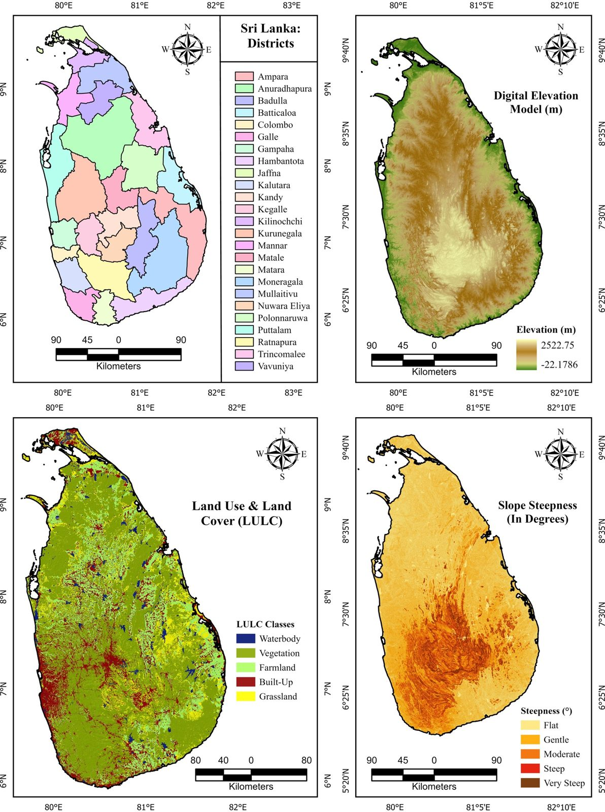
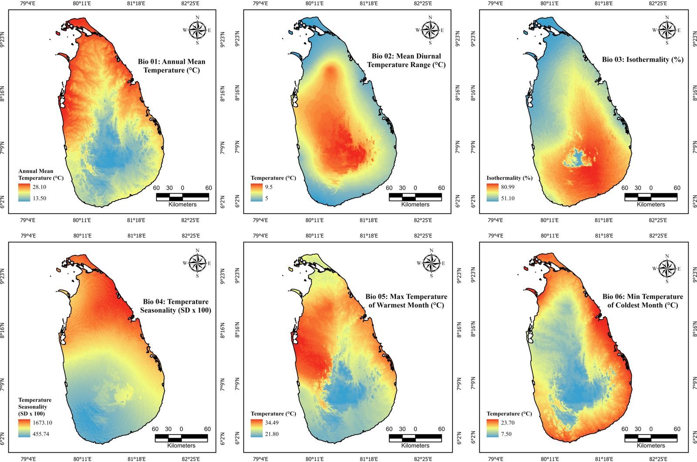
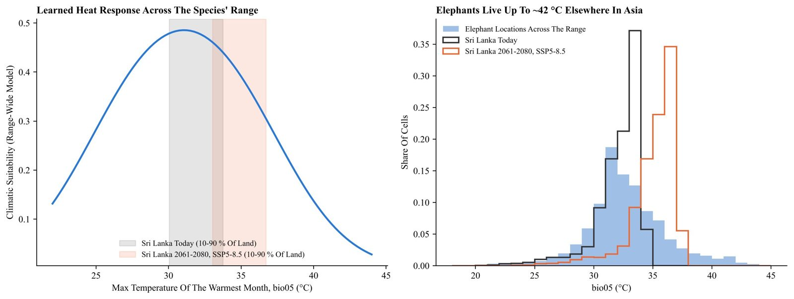

Projected Habitat Change and Protected-Area Gaps for the Asian Elephant (Elephas maximus) in Sri Lanka:
Ensemble Habitat Suitability Modelling under CMIP6 Climate and Land-Use Scenarios
Abstract
The Asian elephant (Elephas maximus) is Endangered, and Sri Lanka holds one of its densest wild populations on land largely shared with people. This study maps current and future habitat suitability across the island, validates the map against the independent national survey and measures how much suitable habitat lies outside protected areas.
GBIF records (n = 1,871) were cleaned and, because most iNaturalist coordinates are obscured, aggregated into 75 presence boxes of 0.2°. Thirty-two candidate predictors were prepared on a 1 km grid and seventeen survived correlation and VIF screening. MaxEnt, GLM and Random Forest were fitted with an observer-effort correction, 144 designs were compared, and the best were combined in a weighted ensemble. The digitised survey of Fernando et al. (2019), with 2,624 squares, drove model selection and nested spatial cross-validation.
The Phase I ensemble reached AUC 0.851. Replacing the island-only climate layers with a climatic niche learned from 7,346 records across 13 range countries lifted the final model to AUC 0.904 and TSS 0.734. Under CMIP6 climate, land-use and population scenarios, suitable habitat falls by 10.6–13.4% (SSP2-4.5) and 11.4–17.8% (SSP5-8.5) by 2041–2080, driven mainly by hotter summers.
The Scale Of The Challenge
Why a national, bias-aware habitat map is needed for the Sri Lankan elephant.
Sri Lanka, 25 Districts
5°55′N – 9°50′N, 79°40′E – 81°55′E · Indian Ocean
Basemap
Data layers
Districts are shaded by the share of land the final ensemble classes as suitable. Click any district for its profile, toggle presence boxes, precise records, protected areas and survey squares from the panel, switch basemaps, or search a district by name.
Setting And Justification
A south-central massif rising to 2,524 m controls Sri Lanka’s two monsoons. The south-west monsoon (May–September) wets the south-western slopes, while the north-east monsoon (December–February) supplies most rain to the north and east. Land cover grades from wet evergreen forest in the south-west to a mosaic of dry forest, scrub, irrigation tanks and paddy in the north and east, which is where most elephants live.
The island holds one of the largest wild Asian elephant populations, a steep climate gradient over a short distance, an independent national survey for validation, and some of the most severe human–elephant conflict in the species’ range. All analysis runs on a 1 km grid in WGS 84 / UTM 44N; results are read at about 5 km.
Rainfall Zones
- Monsoons
- SW (May–Sep), NE (Dec–Feb)
- Key parks
- Wilpattu, Yala, Udawalawe, Minneriya, Wasgamuwa, Gal Oya
Study Area Layout
Districts, digital elevation model, land use / land cover and slope.

A Six-Stage GeoAI Workflow
From Obscured Citizen-Science Records To Future Protection Gaps
Occurrence Preparation
Invalid, centroid, pre-1990, captive and specimen records were removed. Because iNaturalist displaces threatened-species points within a 0.2° square, each occupied square became one presence located somewhere inside it.
Observer-Bias Correction
A recording-effort surface from other iNaturalist mammal records, smoothed with a 10 km kernel, entered the models either as a fixed offset or as a covariate held constant when the map is drawn (Warton et al., 2013).
Predictor Screening
Climate, terrain, vegetation, water, land-cover and human-pressure layers were aggregated to a 1 km grid with the sea masked. Near-duplicates and pairs above |r| = 0.7 were thinned, and the remaining set was checked with the variance inflation factor.
Ensemble Modelling
Each algorithm was fitted on the 75 boxes against 20,000 background cells. 144 designs varied predictor scale (1 km or 5 km), predictor set, bias handling and regularisation; the best designs were combined on percentile ranks with weights w = AUC − 0.5.
Validation And Range-Wide Niche
The national survey was digitised and used in nested spatial cross-validation over five held-out regions. A climatic niche learned from records across 13 range countries (bio05, bio12, bio04, bio19) then replaced the island-only climate layers.
Scenarios And Gap Analysis
Suitability was projected with five GCMs for SSP2-4.5 and SSP5-8.5 in 2041–2060 and 2061–2080, separating climate from land use and population. Suitable habitat was overlaid on protected areas, and extrapolation was checked with MESS.
Predictor Variables And Collinearity
Seventeen predictors survived screening. Bars show each variable’s variance inflation factor (lower means less redundant); all are well below the threshold of 10.
Collinearity
Well within the common threshold of 10 (Dormann et al., 2013).
Variable Categories
Final Ensemble Weights
Final model: range-wide climatic suitability + 11 habitat and human predictors, threshold 0.417.
Environmental Predictor Maps
Map layouts of the candidate predictors. Select a group, then click the map to enlarge it.

Annual mean temperature ranges from 13.5 °C in the highlands to 28.1 °C in the north; the warmest-month maximum (bio05) reaches 34.5 °C.
Current Habitat Suitability
Machine Learning Suitability Surfaces For The Asian Elephant
How The Models Performed
Accuracy against the independent national survey (5 × 5 km squares, held-out regions).
AUC Against The National Survey
GBIF-fitted models (green), simple baselines (grey) and survey-trained references (amber).
Reading The Results
The Phase I ensemble reached AUC 0.851 on held-out regions, close to a map of annual rainfall alone (0.823), and population density alone scored higher (0.911). Elephant occupancy in Sri Lanka is strongly shaped by the rainfall gradient and by people.
Learning the climate response from the whole range added what the island could not show. The range-wide climatic suitability alone reached 0.854 without any Sri Lankan data, and the final ensemble reached 0.904, holding 0.903 when weights and threshold were chosen in four regions and tested in the fifth.
Where Suitable Habitat Lies
At the 0.417 threshold, 42,080 km² (64.4%) of the island is suitable.
| District | Suitable km² | % of district | Survey occupied % |
|---|
Suitable Share By Rainfall Zone
Projected Habitat Change, 2041–2080
CMIP6 Climate, SSP Land Use And Population, Five-GCM Mean
How Much Habitat Changes
Change in suitable area against today’s 42,080 km², for each driver set and scenario.
Change In Suitable Area (%)
Each Driver Changed Alone, 2061–2080
Heat Drives The Decline
Across Asia, suitability peaks where the warmest-month maximum is about 30–33 °C. Sri Lanka’s lowlands move to 34–38 °C by 2061–2080, still inside the range elephants occupy elsewhere (up to ≈ 42 °C).

Which Districts Lose Most
Change in suitable habitat by 2061–2080. Click a district on the map for its full profile.
| District | Suitable today (km²) | SSP2-4.5 (%) | SSP5-8.5 (%) | Lost, SSP5-8.5 (km²) |
|---|
Protected-Area Gap Analysis
Suitable Habitat Inside And Outside 568 Protected Areas
Each 1 km cell’s exact protected fraction was computed from WDPA polygons. Click a district for its protected and unprotected suitable area.
Protection Status
Inside Protected Areas
Forest Department reserves hold 10,264 km² and DWC wildlife areas 7,481 km².
Outside Protected Areas
Most elephant habitat is shared land: farms, scrub and village tanks.
Protected Land That Is Suitable
Losses fall mainly in Forest Department reserves of the north and east.
Largest Unprotected Block
Anuradhapura 4,783 · Moneragala 3,312 · Ampara 2,196 · Kurunegala 1,930 km².
Inside vs Outside Protected Areas, 15 Largest Districts
Share Of Suitable Habitat Outside PAs
DS Divisions With Most Unprotected Habitat
| Horowpothana (Anuradhapura) | 689 km² |
| Siyambalanduwa (Moneragala) | 635 km² |
| Dimbulagala (Polonnaruwa) | 460 km² |
| Vavuniya (Vavuniya) | 436 km² |
| Madulla (Moneragala) | 414 km² |
| Medawachchiya (Anuradhapura) | 409 km² |
Protection Gap By Scenario
| Map | Suitable (km²) | Inside PAs (km²) | Outside PAs (km²) | Outside (%) | Protected land suitable (%) |
|---|---|---|---|---|---|
| Current | 42,080 | 16,959 | 25,121 | 59.7 | 87.2 |
| SSP2-4.5, 2041–2060 | 37,601 | 15,089 | 22,513 | 59.9 | 77.6 |
| SSP2-4.5, 2061–2080 | 36,441 | 14,653 | 21,788 | 59.8 | 75.4 |
| SSP5-8.5, 2041–2060 | 37,287 | 15,270 | 22,018 | 59.0 | 78.5 |
| SSP5-8.5, 2061–2080 | 34,609 | 13,790 | 20,818 | 60.2 | 70.9 |
Synthesis, Limitations And Future Scope
What The Models Say About The Future Of Sri Lanka’s Elephants
Key Conclusions
A validated national habitat model was built entirely from open data: suitable habitat covers 42,080 km² (64.4%) of Sri Lanka, 70% of it in the dry zone, with the largest areas in Anuradhapura, Moneragala, Ampara and Polonnaruwa.
Treating obscured iNaturalist records as 0.2° presence boxes, correcting for observer effort and validating with nested spatial cross-validation kept accuracy estimates honest; the Phase I ensemble reached AUC 0.851.
Learning the climatic niche from 13 range countries raised accuracy to AUC 0.904, TSS 0.734 and 88.4% overall accuracy, and removed climatic extrapolation for future scenarios.
Suitable habitat is projected to decline by 10.6–13.4% under SSP2-4.5 and 11.4–17.8% under SSP5-8.5 by 2041–2080. All five climate models agree on a loss.
Hotter summers dominate (−12.4% to −23.1% alone). Losses concentrate in Batticaloa (−48%), Mannar (−45%), Kurunegala (−40%), Mullaitivu and Vavuniya, while cooler foothills gain a little.
About 60% of suitable habitat lies outside protected areas in every scenario, and the share of protected land that stays suitable falls from 87% to 71–75%. Conservation depends on managing shared landscapes and linking them to cooler refugia.
Limitations
Only 75 presence boxes of about 22 km were available, so maps should be read at about 5 km despite the 1 km grid.
The survey guided model selection, weights and threshold; nested cross-validation reduces but does not remove that optimism. Digitising adds up to about ±0.05 AUC.
The range-wide niche uses climate only, and its single-peaked response may overstate the heat effect. Global land-use projections omit local development projects.
How Reliable?
Future Scope
GPS Telemetry
Collar data would give exact locations and allow habitat selection and movement to be modelled at fine scale.
Corridors And Refugia
Connectivity models can link the south-eastern stronghold, the north-central forests and cooler foothill refugia.
Conflict Risk
Combining suitability with crop-raiding and casualty records would predict where future human–elephant conflict may rise.
National Land-Use Plans
Planned irrigation, settlement and road projects can replace global projections as more realistic future scenarios.